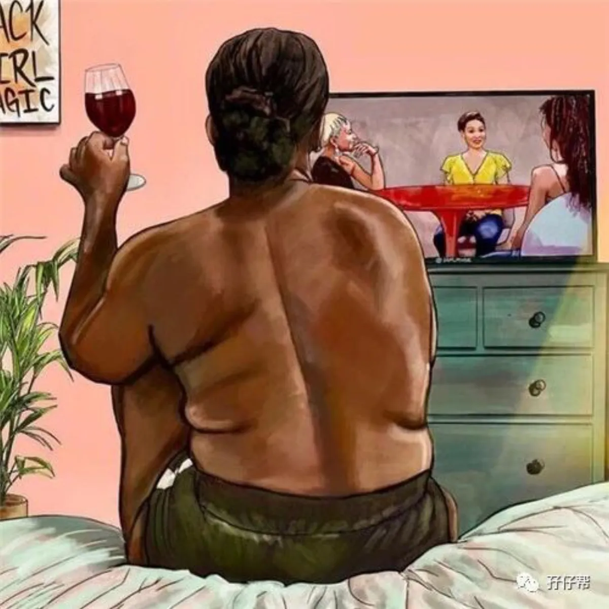
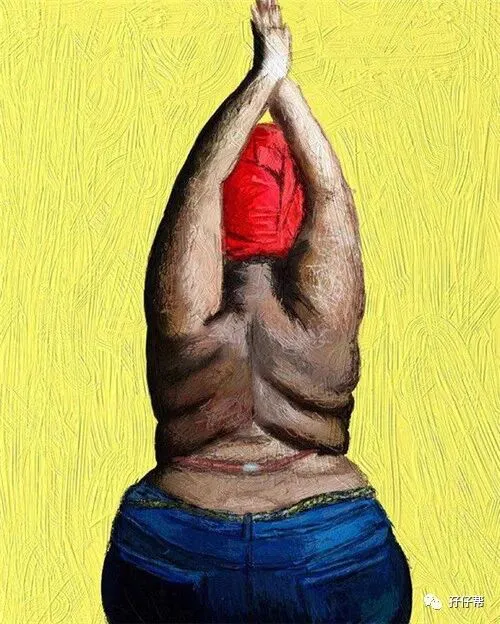
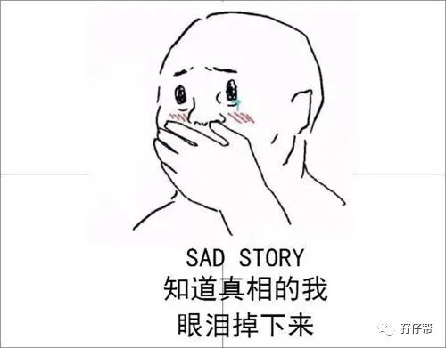
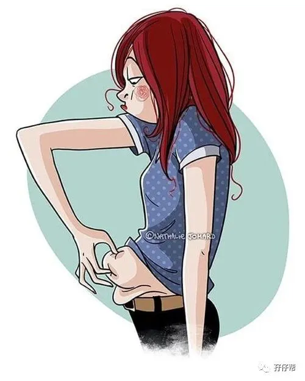
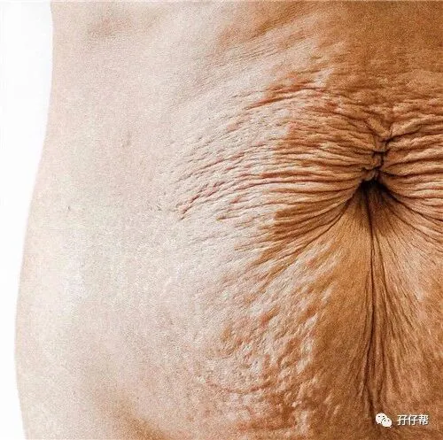
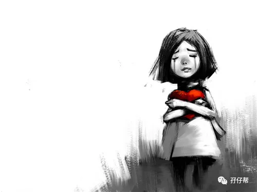
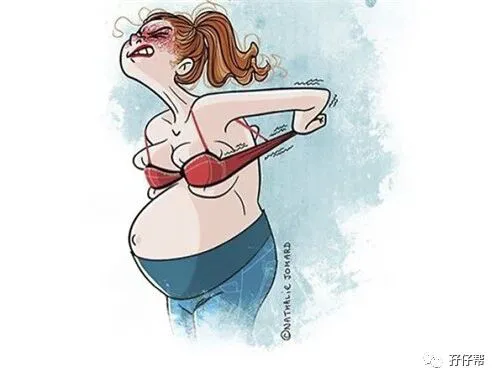
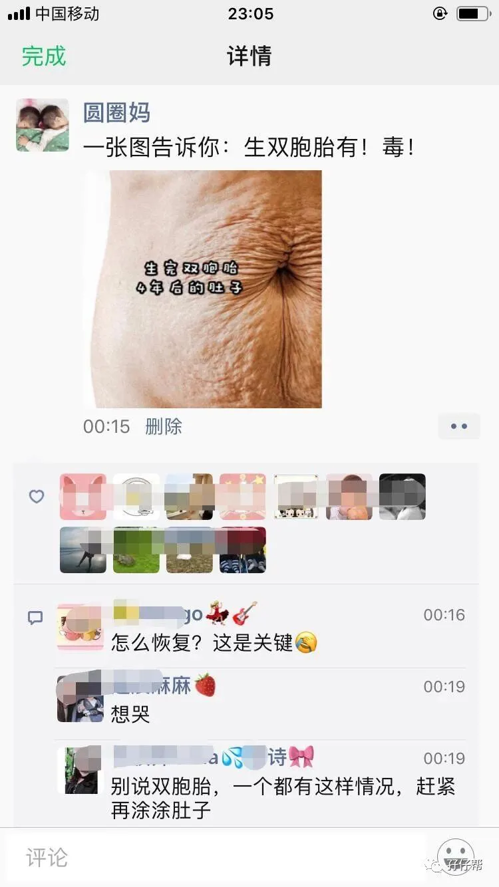
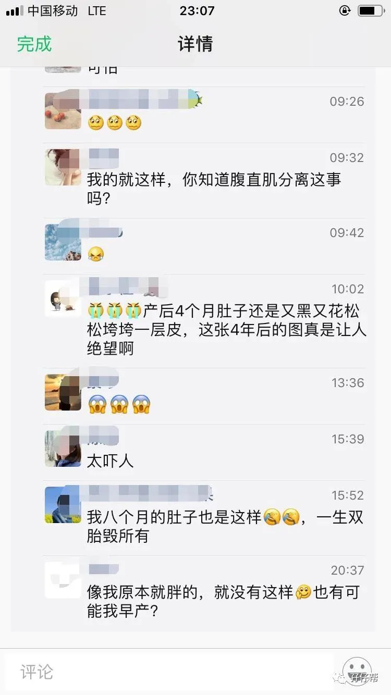

文|圆圈妈，一个文思如尿崩的双胎妈妈
图|来自网络，如有侵权，请联系删除
【01】
我本刘亦菲同款，奈何双胞胎妈妈
今天去肉菜市场买菜，被一个卖猪肉的少妇误以为我是靓仔。
那一刻，我真想原地爆炸！
理智告诉我，这种事情，「士可杀，不可辱」，虽然她家的排骨很新鲜卖相好，但本姑娘坚决不买！
想当年我也是林黛玉款，我见犹怜，抽屉里情书多如牛毛（好汉不提当年勇），倒追圆圈爸时，没有哪个情敌敢怼我…
怎么现在就成了花木兰，雌雄难辨了？我只不过当了两个双胞胎男孩的妈而已，不至于吧！
我回去仔细照了下镜子，瞬间悲从中来！
我何止有花木兰从军的风范，差点能赶上项羽的“力拔山兮气盖世”了。
前几日在双胞胎教育群看到一双胞胎妈妈凹凸有致的身材，紧致白皙的小腹，让人想喷鼻血的同时又心生羡慕。
都是女人，都是生双胞胎，咋就那么大差别呢？
那么，今天的推文就来吐槽下生双胞胎的那些“毒”副作用，我先说我的，你们稍后在评论区留言哈！
【02】
副作用1：身材走样，肚子变形
产后第一天，我问查房医生：“我这肚子是不是还有一个没出来？”医生白了我一眼：“双胎妊娠本来就超负荷，能收缩成这样已经很不错了。”
知道真相的我眼泪掉下来！
卸货3个月后，我依然被好心的司机蜀黍当孕妇处理，排除万难给我争取了一个座位，可把我尴尬地想打开车窗门，纵身一跃，实在无颜见江东父老啊！
半年后，经历了无数个缺觉缺爱的日日夜夜，肚子终于缩减了不少， 几乎恢复到孕前体重，但依然赘肉横生。
腹直肌分离非常严重，作死跑步健身都无济于事，那些松松垮垮的赘肉依然甩不掉。
只要每次胡吃海喝之后，下腹部就会迅速膨胀起来，饿几天之后又会消减下去。
你可以想象，肚子就像一个气球一样，一吹就涨，一放就收。
更惨的是肚脐眼，完全扭曲变形。
孕前的肚脐眼是凹进去的，又深又大，弧度好看，妥妥的福相！
现在呢？压根找不到肚脐眼的轮廓，整块凸出来，又浅又丑，周边还有恶心至极的妊娠纹“星星点缀”着….
天晓得怀胎9个月，我的肚子到底经历了多少场史诗般的战争，肚脐眼居然被整出十级伤残。
苍天，我的马甲线，我的比基尼，我的热裤…都老死不相往来了吗？
【03】
副作用2：头发变少，体质变差
受激素水平影响，我也逃不了产后脱发的厄运，每次洗头时那些掉发就差没把下水道堵住，我连梳头都得小心翼翼地，好像拆地雷一样，不敢造次…
有时候，圆圈兄弟无理由哭闹让人心烦得很，我就习惯性使劲搓头发宣泄下，一抓就一把，这一幕被两位小主看见后，觉得好玩，于是四只小手一起上….
KO….开心就好，老母亲的头发随便拔！只要别TM地一起哭，怎么样都行。
与产后脱发并驾齐驱的是体质变差。
孕前，我自信是一枚身体棒棒哒的女汉子，每年也就一两次季节交换时感冒一次，不吃药，忍一忍，熬一熬，不出一个星期就自动痊愈。
产后，我一个月病一次，而且很邪门，大姨妈来的同时，感冒发烧一起上。
为了避免传染给圆圈，也因为身体太虚弱扛不住，我不得不妥协了，半夜爬起来，含着热泪，悲壮地吞下两粒平时打死都不肯吃的速效伤风胶囊。
印象很深刻的是，我经常带着口罩给他们喂奶，想咳嗽都得憋着！有时候一口痰没机会吐出来，就这样吞进去了！（此处略带恶心，但这的确是养育双胞胎多么狼狈的真实写照！）
【04】
副作用3：胸呢？女人味成过去式
很遗憾，我没有喂母乳，产后第三天就吃了溴隐亭（一种回奶药）。
不喂母乳就不是个好妈妈，可能是天理不容我，上帝惩罚我了，让我在孕期好不容易囤积的E罩杯严重缩水。
站起来时，勉强能分辨出前胸还是后背，躺下后，若脸正好被蒙上了...按圆圈兄弟的意思，到底哪个是妈妈哪个是爸爸呀？
@#4%...这样的落差让我崩溃极了。
须知道，怀孕期间，那傲人的双峰是陪伴我抱着巨肚在无数个不眠之夜，左右交换侧躺下去的唯一灵丹妙药。
每次我看负面新闻被双胎输血综合征吓得元神出窍时，只要我站在镜子前看看不断升级的罩杯，心里就宽慰不少，马上就会冷静下来。
现在，每次上街看到迎面而来的大波妹，我就很畸形地认为：“切，假的！”
【05】
朋友圈风波
8月的第一天凌晨，我发了一个朋友圈，如图所示！
▲往下拉，更精彩▲
顿时炸锅了！把一群似睡未睡的孕妈们和还在疯狂奶娃哄睡的宝妈们彻底炸醒了！
事情起因是这样的：深夜刷微博，正好看到这图@美国妇产科医生，相当震惊，第一反应：「尼玛！我的肚皮怎么跑这来了？」
像！实在太像了！99.99%的相似度！
一度怀疑是不是摄影师在神不知鬼不觉的情况下，照着我的肚皮，“咔嚓”一声，偷拍了一张！
于是，我意味深长地配上一句旁白：“生完双胞胎4年后的肚子！”
莫慌！
这图的确有点让人瘆得慌！但不是所有生过双胞胎的妈妈都会这样，若有注意产后修复和保养，基本上能恢复到孕前状态！
只有少部分人可能体质原因，基因如此或其他“世界未解之谜”，则有可能会跟这种柚子皮似的肚皮，共度余生！
而我，正好就是这少部分中的一个！
你呢？什么情况？
欢迎在留言区大声告诉我！
“我们不一样，不一样，不一样！”
本文有点自嘲自黑，若说到你痛点了，就在文末点赞吧！
-END-
今日互动话题
#说说看，生完双胞胎后，
你经历的那些毒副作用#
评论区聊一聊呗！
一好文推荐一
一加入社群一
一关注孖仔帮一
觉得此文有点意思嘛？？请点“在看”








